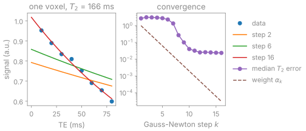

Model-based reconstruction#
TL;DR
A forward model nonlinear in its unknowns, image times coils (
nlinv) or parameter maps through a signal model (moba), is aNonlinearOperatorwith a derivative and its adjoint.IRGNMsolves it by iteratively regularized Gauss-Newton, BART’s own loop, with BlochSim signal models whose bounds keep every iterate physical.The
mobaandmobafitapps fit those models and answer in named maps; a command line they cannot express runs as BART’s command.
You meet a nonlinear forward model when the coil sensitivities are unknowns alongside the image, or when the image is a function of tissue parameters such as \(T_1\) or \(T_2\). Model-based reconstruction fits the parameter maps directly to k-space, \(y_{c,e} = P_e F (S_c \cdot M_e(\theta))\), so every contrast constrains the same few maps. Lesson 4 of the Course estimates image and coils jointly, and lesson 9 fits a \(T_2\) map to k-space.
Capabilities#
Represents a nonlinear operator with its value, its derivative at a point and the adjoint of that derivative, composable with linear operators by
@.Code:
bartorch.nlop. Tests: a derivative agrees with a finite difference; a Jacobian is a linear operator with the adjoint identity; a linear operator still composes with a nonlinear one (test_nlop_algebra.py).Runs iteratively regularized Gauss-Newton with the same arithmetic as BART’s own loop, to the last bit.
Code:
IRGNM,IRGNMBlock. Tests: the loop without an inner solver is the first form to the last bit; the Python loop with conjugate gradients is the library to the last bit (test_nlop_irgnm.py).Solves each linearized problem with any solver of
bartorch.optim, whose regularization terms then penalize the step.Code:
IRGNM(inner=...). Tests: an unregularized inner solver reaches the same answer; a threshold pulls the answer away from the unregularized one (test_nlop_irgnm.py).Estimates image and coil sensitivities jointly, as
nlinvdoes, with the coils under a Sobolev weighting.Code:
NonlinearSense,nlinv(). Tests: a Cartesian fit is the nlinv tool to the last bit; the coil weighting damps high spatial frequencies (test_nlop_mri.py).Wraps a signal model over parameter maps (inversion recovery, multi-echo decay, any BlochSim simulator) as a nonlinear operator, from its value, derivative and adjoint products, without forming a Jacobian.
Code:
ModelOperator,MultiEcho(),Bloch(). Tests: the multi-echo decay is what BART computes; the adjoint is the adjoint of the derivative; any model with the products is an operator (test_nlop_blochsim.py); the Look-Locker recovery is BART’s (test_signal_models.py).Keeps each bounded parameter inside its bounds at every iterate, and returns named maps in their own units.
Code:
initial(),split(). Tests: a bound keeps every iterate physical; a starting point and the maps it stands for round trip (test_nlop_blochsim.py).Fits a signal model voxel by voxel to images, or directly to k-space with known or jointly estimated coils.
Code:
mobafit(),moba(). Tests: a decay is fitted to the time it was made from; moba fits the decay behind known coils; moba estimates the coils with the decay (test_apps.py).Answers a
mobaormobafitcommand line with the app, to the tolerance of a fit, and sends one the app cannot express to BART’s command.Code:
bartorch.cli. Tests: moba writes the command’s maps to the tolerance of a fit; a moba the app cannot express goes to the command; a mobafit the app cannot express goes to the command (test_cli.py).
Division of responsibility#
BART: the Gauss-Newton step and its conjugate-gradient inverse, the
noircoil model, and themobaandmobafitcommands a command line falls back to.bartorch: the operator algebra, the step written out in Python, and the apps that assemble
mobafrom them, andmobafit’s per-voxel Levenberg-Marquardt.BlochSim: the signal models, their derivatives and the bounded parameterisation.
Method#

A \(T_2\) decay fitted voxel by voxel by IRGNMBlock
from a start of 80 ms, regularized towards the middle of the \(T_2\) bound
(scripts/figures/model.py). The early, strongly weighted steps stay near
the centre; the error falls once \(\alpha_k\) is small enough for the data to
dominate.
Gauss-Newton step#
Each step linearizes \(F\) at the iterate \(x_k\) and solves a Tikhonov-regularized least-squares problem centred on \(x_{\mathrm{ref}}\):
with \(DF = DF_{x_k}\). The weight decays geometrically, \(\alpha_{k+1} = (\alpha_k - \alpha_{\min})/q + \alpha_{\min}\), with \(q = 2\) by default.[1] The number of steps is a regularization parameter: stopping early gives a smoother estimate.
Sobolev weighting#
In \(S_c \cdot x\) any nonzero function can move from the coils to the image
without changing the data. nlinv solves for the coils as k-space
coefficients \(\hat{s}\) with \(S = \mathcal{F}^{-1}[(1 + a|k|^2)^{-b/2}\hat{s}]\),
so the penalty on \(\hat{s}\) is a Sobolev norm of \(S\) and the image receives the
high spatial frequencies.[2] moba uses the same weighting for its coils,
and apps.moba(smooth=...) applies it to a parameter map such as B1 or B0.
Bounded parameters#
A bounded parameter is solved for through a transformed variable: a scaled sigmoid for a two-sided bound, a softplus for a one-sided one. Every iterate then maps inside the bound, and a millisecond relaxation time and a dimensionless fraction take steps of comparable size. The data term remains nonconvex in \(\theta\), so the result depends on the start.[3] Which command lines the apps answer, and why the others go to BART, is listed in Model-based command routing.
Examples#
4. Joint reconstruction of image and sensitivity maps: image and coils by Gauss-Newton.
9. Nonlinear inversion for T2 mapping: a \(T_2\) map by voxel-wise fit and by fit to k-space.
Subspace-constrained T1 mapping: the linear alternative, a subspace reconstruction followed by a fit.
Nonlinear operators and Reconstruction pipelines: the operators, the signal models, IRGNM and the apps.